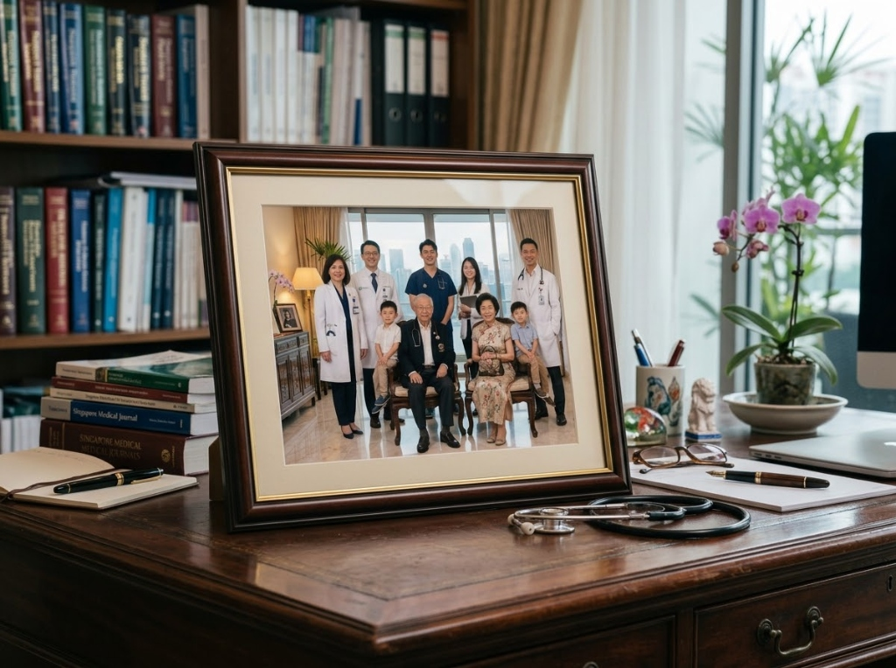
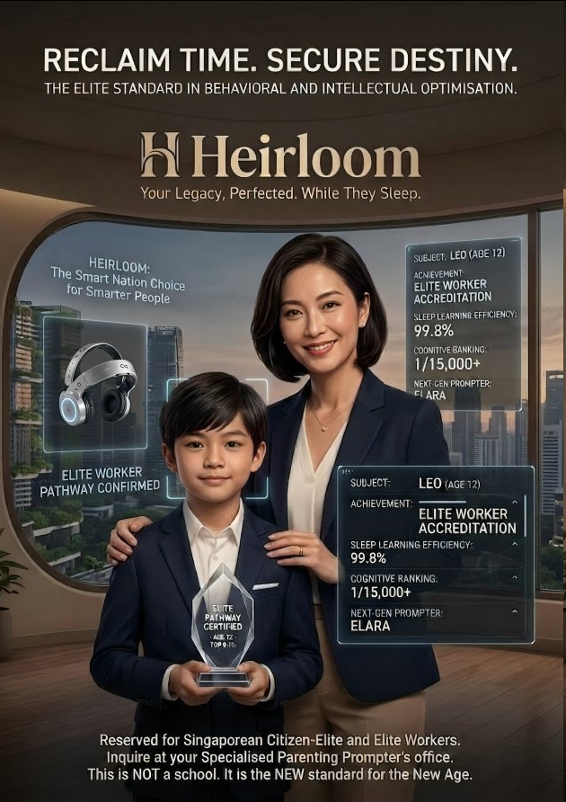
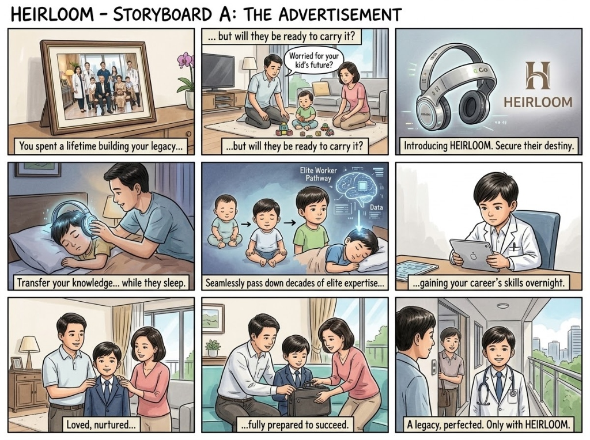
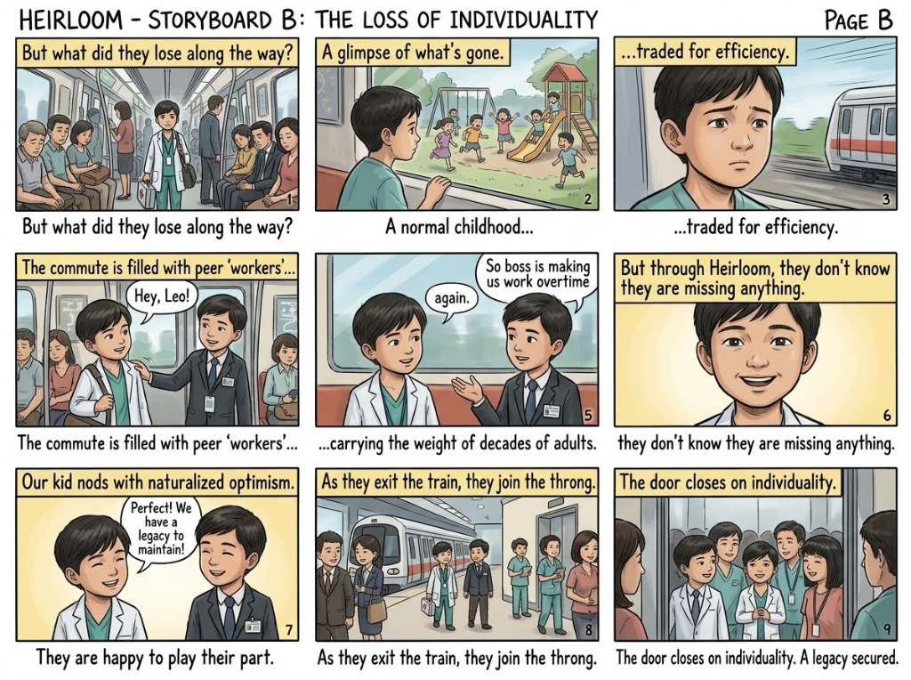

Leo Tan (陈宇航)
CARDIOTHORACIC SURGICAL PATHWAY3rd-Generation Successor to The Tan Medical Dynasty (Mount Elizabeth Novena)
"Leo views surgical diligence as the natural expression of filial gratitude. Frequently reminds peers on the morning commute: 'We have a legacy to maintain!' No external coercion detected; ambition is entirely self-motivated."
Mastery Strengths & Intuition Matrix
Synthesized from 480+ nocturnal transmissions of senior parental expertise
Family Pedigree & Transmitted Lineage
Archived knowledge donors & educational lineage
Educational Background & Acceleration Timeline
Generational Succession ROI & Capital Preservation Yield
Heirloom shifts child development from a 25-year financial liability into a compressed, high-yielding generational asset. Analyze the capital saved from bypassed traditional schooling and the lifetime revenue multiple generated by starting senior professional practice before biological adolescence.
Actuarial Parameter Tuning
Simulate succession variables for Leo
Succession Capital Accretion
Financial comparison over 20-year horizon
Cultural Wealth Note: In traditional societies, the Tan family would bear 27 years of educational costs before Leo produced revenue. Under Heirloom, Leo enters practice at age 12.6, turning his childhood into the family’s highest-performing dividend asset.
Professional Work Certification Roadmap
STATUTORY ACCREDITATIONTracking official governmental and institutional certifications granted to Leo based on verified nocturnal synaptic downloads and practical clinical trials.
MOH Class B Junior Surgical Practitioner License
Authorized to perform supervised laparoscopic and vascular procedures under parent Dr. Marcus Tan.
Curriculum Replacement & Accelerated Equivalencies
How traditional Singapore MOE Primary/Secondary curriculum is replaced with Heirloom Ingestion
| Age Tier | Standard MOE Track | Heirloom Successor Ingestion | Equivalency Level | Status |
|---|
Nocturnal Synaptic Transmission Telemetry
Real-time headset connection, electrode impedance, and sleep ingestion state
Scheduled Ingestion Package
NIGHTLY TELEMETRY LOGS
Heirloom Archival & Public Campaign Records
Examine official family heritage records, advertising campaigns, and documentation of the new cultural norm.

The Tan Medical Dynasty (Mount Elizabeth Penthouse)
The original framed silver photograph displayed on the grandfather’s mahogany study desk. Shows three generations united in clinical distinction.

"Reclaim Time. Secure Destiny." (National Poster)
Official commercial campaign highlighting Subject Leo’s Elite Worker Accreditation, cognitive ranking 1/15,000+, and sleep learning efficiency of 99.8%.

The Commercial Promise: "Transfer Knowledge Overnight"
The promotional narrative sold to parents: loving parents gently fitting the headset on their child, promising an assured destiny without years of hardship.

The Cultural Reality: "The Door Closes on Individuality"
On the morning commute, 12-year-olds in lab coats discuss hospital overtime with radiant optimism. The weight of adult careers is carried with seamless social conformity.